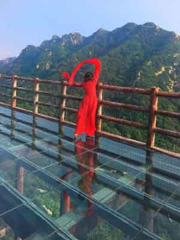

歌曲详情介绍： 《方城》（《成都》方城版） 原创/原唱 赵雷 歌词改编：任怀卿 演唱：屈风

采桑子 重阳 ——毛泽东 人生易老天难老，岁岁重阳， 今又重阳，战地黄花分外香。 一年一度秋风劲，不似春光， 胜似春光，寥廓江天万里霜。
农历九月初九，为重阳节。民间在该日有登高的风俗，所以重阳节又称“登高节”，此外还有茱萸节、菊花节等说法。重阳节与除夕、清明节、中元节三节统称中国传统四大祭祖的节日。相传在古时，重阳这天所有亲人都要一起登高“避灾”。因此后人在庆祝重阳节时一般会登高、赏菊、喝菊花酒、插茱萸。由于九月初九“九九”谐音是“久久”，有长久之意，所以常在此日祭祖与推行敬老崇孝活动。
国家AAAA景区——七峰山生态旅游区位于河南省南阳市方城县，七峰山山系约105平方公里，主景区面积约40平方公里，形成于1.5亿年前。景区内风景秀丽，七座山峰紧密相连大气磅礴，山势峭拔、石洞奇幽、谷深林密、飞瀑流泉。
尘世难逢开口笑， 菊花须插满头归。 七峰山菊花开得正艳，美不胜收。 也许正如歌词里所唱： 总想到方城的山川游一游 从七峰山到七十二潭一路看不够 真情陪伴我的左右 心儿跟爱一起漫游 在那望花湖里泛舟 看大美方城竞风流 在华彩绽放的天地里 我默默依恋你 方城 爱不够的就是你